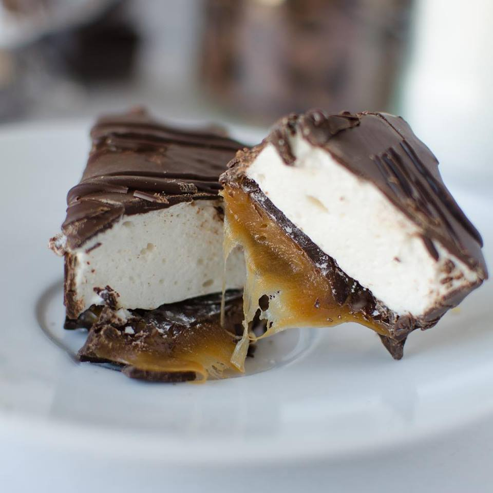
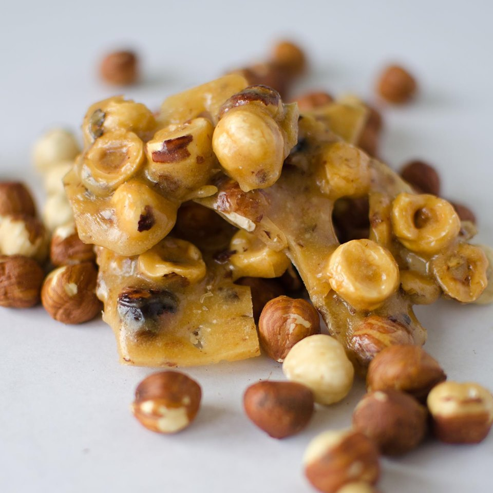
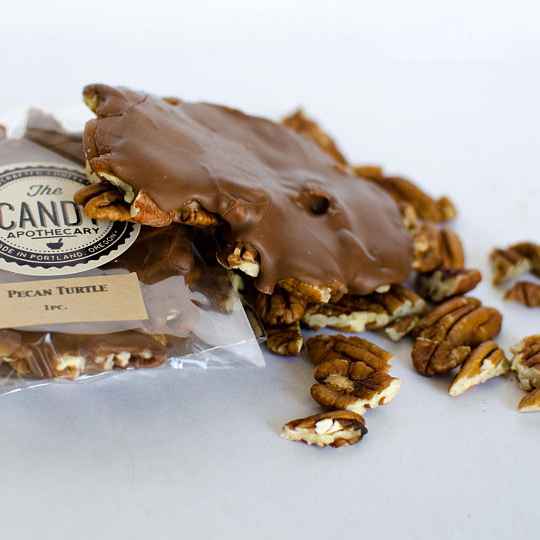
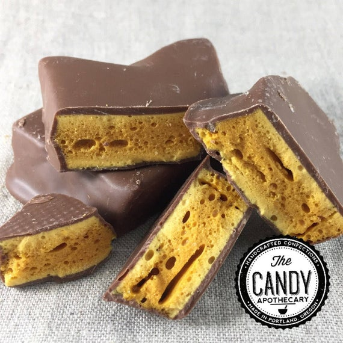

Featured Candy

Cara-Mellows

Oregon Hazelnut Brittle

Pecan Turtles

Sea Salt Chocolate Covered Caramels

Milk Chocolate Seafoam Honeycomb Candy
Handmade
" Every candy is made one batch at a time, hand-cut and hand-dipped in chocolate. No fillers or compound chocolate, but solid chocolate tempered to the exact consistency for divine dipping and perfect snap to the finished product."